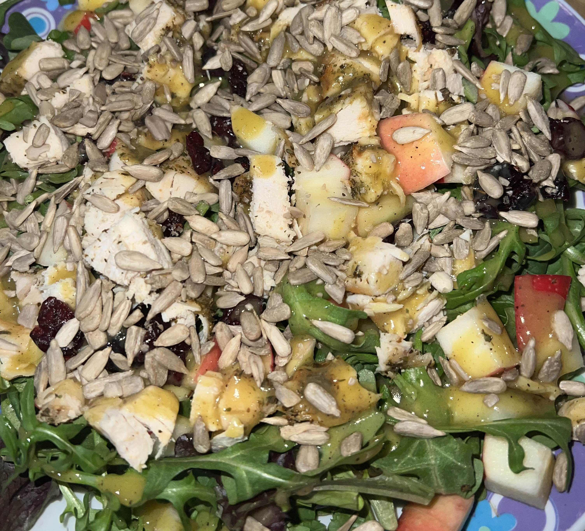

Apple Chicken Salad

A multi green based salad topped with a variety of healthy flavor
Enjoy this salad as a lunch or dinner, this provides a sweet and tangy experience with a bit of a crunch, perfect for a filling and wholesome meal.
You can have the salad with or without the chicken as well as with freshly cooked hot, or previously cooked and cold chicken.
The dressing is the 'secret sauce' ready to excite your taste buds and to satisfy your cravings.
Ingredients:
- 1/4 cup of craisins
- 1/4 cup of sunflower seeds
- 1 whole apple
- 2/4 cups of roasted chicken
- 2 large hand fulls of mixed greens
- 1/4 cup of honey dijon mustard vinaigrette dressing
Steps:
- Place the salad greens in a large bowl.
- Add Toppings: Evenly distribute the roasted chicken, apple slices, and Craisins over the greens.
- Combine Dressing Ingredients: In a small bowl,
whisk together the olive oil, honey, dijon mustard, apple cider vinegar,
salt, and pepper until well combined.
- Finish the Salad: Drizzle the honey Dijon mustard vinaigrette dressing over the salad, then sprinkle the sunflower seeds on top.
Home